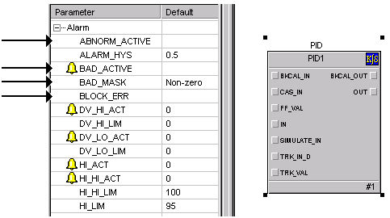
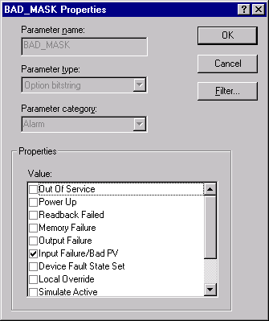

Function block status
DeltaV now supports alarming directly on the individual bits of both block and module bitstring parameters.
To understand how to propagate function block status conditions to the module level, you must first understand how these statuses are set in the function block.
Function block error information is stored in the function block parameter BLOCK_ERR. Several error conditions can be active at the same time. BLOCK_ERR sets either the function block parameter BAD_ACTIVE or the function block parameter ABNORM_ACTIVE to non-zero, depending on the configuration of the function block parameter BAD_MASK.

The function block parameter BAD_MASK is used to determine which of the error conditions sets the function block parameter BAD_ACTIVE and which sets the function block parameter ABNORM_ACTIVE.
By default, all of the conditions in BAD_MASK are not selected. Thus, the function block parameter ABNORM_ACTIVE is set when any of the conditions become true and BAD_ACTIVE is not set (by default). When you select an error condition in BAD_MASK and the error condition becomes true, then BAD_ACTIVE is set. All other error conditions (not selected) set the ABNORM_ACTIVE when the error condition is present.
If a function block has multiple errors, its BAD_ACTIVE and ABNORM_ACTIVE function block parameters can be active at the same time.
Both BAD_ACTIVE and ABNORM_ACTIVE at the function block level are bitstring parameters. When set, the bits in BAD_ACTIVE and ABNORM_ACTIVE (at the function block level) correspond to the bits in BLOCK_ERR (at the function block level).

Therefore, when you select a condition in the function block parameter BAD_MASK (for example, I/O Failure) and that condition becomes true in the block (as stored by BLOCK_ERR), the function block parameter BAD_ACTIVE is set to the same condition (I/O Failure, in this case). Otherwise, BAD_ACTIVE has nothing set, which means that no selected error condition exists.
Conversely, when a condition that is not selected in BAD_MASK (in this case, anything but I/O Failure) becomes true (as stored by BLOCK_ERR), the function block parameter ABNORM_ACTIVE is set to the same condition. Otherwise, ABNORMAL_ACTIVE is not set, meaning no unselected error condition exists.
While some error conditions for a function block may be important to alarm on, other error conditions are less important to alarm. Having identified the important error conditions using BAD_MASK, you can create a module alarm based on the value of the function block parameter BAD_ACTIVE instead of checking the individual error conditions in the function block parameter BLOCK_ERR.
The same list of error conditions is included with every function block. To determine which of the error conditions is valid for a specific function block, refer to its BLOCK_ERR definition (in the function block's Parameters topic). For example, the block errors for the PID function block are Simulate active, Local Override, Input failure/process variable has Bad status, Output failure, Readback failed, and Out of Service.